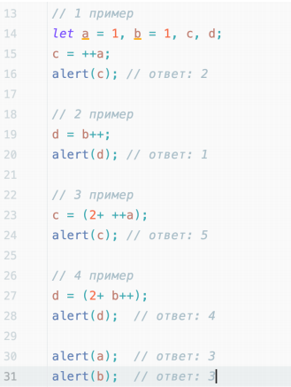
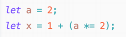

1. Почему код дает именно такие результаты?
 Проверить Открыть исходный код2. Чему будет равен x?
 Проверить Открыть исходный код
3. Объявить две целочисленные переменные — a и b и задать им произвольные
начальные значения. Затем написать скрипт, который работает по следующему
принципу:
- если a и b положительные, вывести их разность;
- если а и b отрицательные, вывести их произведение;
- если а и b разных знаков, вывести их сумму;
Ноль можно считать положительным числом.
4. Реализовать четыре основные арифметические операции в виде функций с двумя параметрами. Обязательно использовать оператор return.
Проверить Открыть исходный код5. Реализовать функцию с тремя параметрами: function mathOperation(arg1, arg2,operation), где arg1, arg2 — значения аргументов, operation — строка с названием операции. В зависимости от переданного значения выполнить одну из арифметических операций (использовать функции из пункта 4 и вернуть полученное значение (применить switch).
Проверить Открыть исходный код6*. С помощью рекурсии организовать функцию возведения числа в степень. Формат: function power(val, pow), где val — заданное число, pow –— степень.
Проверить Открыть исходный код
7*. Написать функцию для проверки пароля. На вход должен подаваться аргумент path
– строка с паролем. Требования к паролю:
На выходе функция должна возвращать строку «Корректный пароль» в том случае,
если пароль удовлетворяет всем условиям, и строку «Некорректный пароль» в том
случае, если пароль не удовлетворяет условиям.
Для реализации проверки условий необходимо использовать следующие
встроенные инструменты:
P.S. Функция проверки пароля может содержать в себе дополнительные подфункции, постарайтесь выделить отдельные логические блоки внутри функции и вынести их в отдельно.
Проверить Открыть исходный код